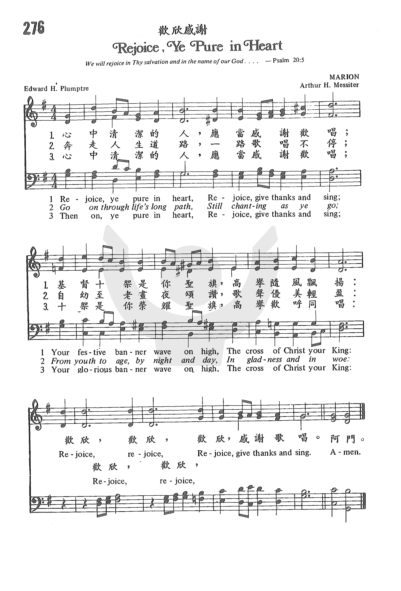

0353 0804 Rejoice, Ye Pure in Heart _ E.
H. Plumptre
清心人當歡欣 ▲ MARION
|
|
歡欣感謝 Rejoice, Ye Pure in Heart
曲：Arthur Henry Messiter
調：MARION
格律：Short Meter with Refrain / 6.6.8.6.Refrain.
詞：Edward Hayes Plumptre
譯：滕近輝等修自多本聖詩集
詩集：《世紀頌讚》23 |
1 Rejoice, O pure in heart,
rejoice, give thanks, and sing;
your festal banner wave on high,
the cross of Christ your King.
Refrain:
Rejoice, rejoice, rejoice, give thanks, and sing!
2 Bright youth and snow-crowned age,
both men and women, raise
on high your free, exulting song,
declare God's wondrous praise. [Refrain]
3 Still lift your standard high,
still chanting as you go,
from youth to age, by night and day,
in gladness and in woe. [Refrain]
4 At last the march shall end;
the wearied ones shall rest,
the pilgrims reach their home at last,
Jerusalem the blest. [Refrain]
5 Praise God, who reigns on high,
the Lord whom we adore:
the Father, Son, and Holy Ghost,
one God forevermore. [Refrain]
Psalter Hymnal, 1987
|
清心人當歡欣，快樂感謝歌唱；
基督十架為你旌旗，高舉隨風飄揚。
活潑少男少女，鬚眉花白老翁，
都當歡欣高聲歌唱，頌主奇恩豐盛。
奔跑人生長路，不論遇禍遇福，
從幼到老，黑夜白晝，都當讚美歡呼。
副歌：歡欣，歡欣，歌唱感謝歡欣。
歡欣 Give Thanks
曲：Henry Smith
調：GIVE THANKS
格律：Peculiar Meter / 不規則
詞：Henry Smith
譯：凌東成
詩集：《世紀頌讚》306
歡欣，心裡感謝神；歌唱，歸於聖父；
讚頌，你賜下慈愛獨生的愛子。
今天，心中剛強無懼怕，主的豐盛滿一生，
皆因主手曾為我顯深恩。讚美！ |
|
https://www.zanmeishige.com/tab/25644.html?songbook=1&index=276

 |
| |
|
http://www.hymncompanions.org/May/31/stream.php
心中清潔的人，應當感謝歡唱；
基督十架是你聖旗，高舉隨風飄揚：
奔走人生道路，一路歌唱不停；
自幼至老晝夜頌讚，歌聲優美清盈：
心中清潔的人，應當感謝歡唱；
十架是你榮耀聖旗，高舉歡呼同唱：
（副歌）
歡欣，歡欣，歡欣，感謝歌唱。
 (請點耳機收聽)
(請點耳機收聽)
這首詩是英國聖公會的牧師卜倫坡（Edward H. Plumptre, 1821 – 1891）在 1865年5月 Peterboroth
大教堂慶祝詩班節時，為來自各地區的詩班列隊進堂時所作的一首進行曲。

全詩共有十節，最後一節是三一頌。 後人覺得太長，就取其中的三節。
歌詞是以詩篇20:5
「我們要因你的救恩誇勝，要奉我們 神的名豎立旌旗，願耶和華成就你一切所求的。」
及腓立比書4:4
「你們要靠主常常喜樂。
我再說，你們要喜樂。」為依據。 這首詩在1868年被刊印在「古今聖詩」（Hymns Ancient and Modern）上。
卜倫坡出生於倫敦，畢業於牛津大學。 1846年擔任聖職，並兼任英皇學院院牧及牛津大學教授。 他是一位名牧，神學家，作家及教育家。
他的著作包括古典文學，歷史，神學，聖經批註，傳記，生物學及詩，並翻譯了許多拉丁聖詩。他也是舊約專家，曾參與舊約修訂委員會，修訂英譯本聖經。
這首詩歌的曲調是梅西特（Arthur H. Messiter, 1834-1916）所譜。 他出生在英國，自幼喜歡唱歌和彈琴，十七歲時從名師學習聲學和鋼琴。
1863年前往美國，參加紐約市三一堂的詩班，後赴費城一教堂任風琴師。
三年後，三一堂正式聘他為詩班指揮兼管風琴師。 他在該教會服事了三十一年，使該堂的詩班保持英國大教堂傳統的高水準，被譽為全國著名詩班之一。
他的男聲和男童聲組成的詩班，成為美國許多聖公會的模範。
筆者不敢奢望自己有顆聖潔的心，因為它時常被世俗的試探和引誘玷污，因自私和小心眼兒而蒙塵；
我但求聖潔的天父，不住地用聖靈來洗滌它，使我保有一顆清潔的心，使它因感恩於天父的大愛而充滿愛心、信心、良善、憐憫、真誠、知足、寬容、平安和喜樂。阿們！
中英文聖詩集參考
英文歌名 Rejoice,
Ye Pure in Heart
頌主新歌 13
教會聖詩 276
生命聖詩 447
新聖詩 49
歡欣讚美 169
聖詩 17
世紀讚頌 23
頌主聖詩 426
讚美詩(新編) 141
http://www.xueshengshi.com/?p=6805
简介（一） （来源：《赞美诗新编史话》）
经文：“耶和华是活神。愿我的磐石，被人称颂；愿上帝，那拯救我的磐石，被人尊崇” (撒下22：47)。
《高唱主名歌》是英国圣公会牧师普伦普特里(E.H.P1umptre，1821一 1891)为
l865年在英国彼得堡罗夫主教座堂所举行的唱诗班节目而写的，是一首进堂赞美诗。原载于《古今圣诗》的附录曲中，共有十节，包括最后一节的三一颂。
普伦普特里是英国的名牧和教育家。他在牛津大学毕业后即担任圣职，并兼任牛津大学皇家学院教授，也是重译旧约委员之一。最后任威尔斯大学教务长。他著作甚多，举凡古典、文学、历史、传记、圣经论述、诗歌等都有。他写圣诗不多，但质量较高，体裁典雅，热情奔放，为编辑圣诗的人所乐于采用。他曾将若干首拉丁赞美诗译成英文。
这首诗的第一句“内心坦白的人”是根据《普天颂赞》(旧版)第351首的译文；《颂主新歌》第l3首译作“心中清洁的人”；原诗为“清心的人欢欣” (Rejoice，ye
pure in heart).
曲谱调名为《MARION》，是梅西特
(A.H.Messiter，1834一1916)所作。梅氏生于英国，自幼喜欢唱歌弹琴。17岁从名师学习钢琴和声乐教学，学成之后于
1851年前往美国谋生。他参加纽约圣公会三一堂唱诗班，该堂唱诗班完全由男童声和男声组成。自从梅氏参加后，唱诗班质量大有气色。三年后，他被聘为三一堂唱诗班指挥并管风琴师。经他努力经营，使三一堂唱诗班成为全美最出色、最有名气的唱诗班。梅氏在该堂工作了三十一年，1897年退休后从事写作，曾编著了《三一堂唱诗班音乐发展史》和《三一堂所用过的音乐》二书，后者包括有他所谱写的乐曲，其中就有这首《MARION》。乐曲与诗词配合得很好，是一首充满了“高唱、感谢、欢欣”的进行曲，用作进堂诗非常合适。
http://pt.fuyinchina.com/m/view.php?aid=3989
普伦普特里（E.H.Plumptre，1821-1891）作词；
梅西特（A.H.Messiter，1838-1916）作曲（1883年）
内心清洁之人，应当欢唱感恩；
十架高擎，圣旗飘扬，荣归基督大君。 精神活泼少年，须眉斑白老人， 精壮男儿，温柔少女．皆当颂赞神恩。 天上无数天军，地上千万圣民．
同心高唱快乐圣诗，歌声上扬天庭。 我愿终生赞扬，终身为主效劳； 自朝至暮，自幼及老，苦乐不改节操。 内心清洁之人，应当欢唱感恩；
光荣旗帜临空飘扬，荣归基督大军。 欢欣，欢欣，欢欣歌唱感恩！
普伦普特里是英国圣公会牧师。这是一首进堂赞美诗，是作者于1865年为英国彼得堡罗夫教堂的圣诗班而写的。原诗共有十节，包括最后一节的三一颂，发表于《古今圣诗》的附录曲中。
普伦普特里是英国著名牧师和教育家。他在牛津大学毕业后就担任圣职，并兼任牛津大学皇家学院教授，是旧约圣经的重译者之一。后来他担任威尔士大学教务长。他又是一位多产的作家，作品涉及古典文学，历史，人物传记，圣经，诗歌等。他写的圣诗虽然不多，但是典雅优美，热情奔放，很受欢迎。他也曾将一些拉丁文赞美诗译成英语。
梅西特出生于英国，自幼喜欢音乐，17岁起接受专业方面的训练，1851年前往美国，参加纽约圣公会三一堂圣诗班，三年以后，受聘为该堂圣诗班指挥兼管风琴师。在他的努力下，这支圣诗班成为美国最出色，最负盛名的圣诗班。他在该堂工作了31年，退休后继续从事圣乐方面的写作，终身为主服务。
https://hymnary.org/text/rejoice_ye_pure_in_heart
Notes
Scripture References:
st. 2 = Ps. 40:3
ref. = Phil. 4:4
Anglican clergyman Edward
H. Plumptre (PHH
363) wrote this text for use as a processional hymn for the annual
choral festival at Peterborough Cathedral, England (May 1865). "Rejoice, a
Pure in Heart" was originally in eleven stanzas-long enough for all the
choirs to process into the cathedral. It was published in the third edition
of Plumptre's Lazarus and Other Poems (1868) and in the Appendix
to Hymns Ancient and Modern (1868). Of the original eleven stanzas,
1,2,8,9, and 11 are included.
In this text the imagery
of a liturgical procession becomes a marching metaphor for the journey of
life. The call to "rejoice, give thanks and sing" (st. 1) is extended to all
people, "bright youth and snow-crowned age, both men and women" (st. 2), and
on all occasions, "by night and day, in gladness and in woe" (st. 3). Life's
pilgrimage has a specific goal, to be at rest in the new Jerusalem (st. 4)
where all God's creatures will join in a great doxology (st. 5). The
"rejoice" theme in the refrain is borrowed from Philippians 4:4.
Liturgical Use:
As a processional or recessional hymn for festive occasions; the
"pilgrimage" theme may be suitable for Old/New Year services and for
funerals.
--Psalter Hymnal
Handbook
Text:
Edward H. Plumptre is the author of this pilgrimage hymn. It was written as
a processional for the 1865 Peterborough Choir Festival at the Peterborough
Cathedral in England. Plumptre published it in his Lazarus and Other
Poems in 1865 or 1868. Its first inclusion in a hymnal was in the
Appendix to Hymns Ancient and Modern in 1868.
The text originally had eleven stanzas. Typically four or five stanzas are
included in a modern hymnal, but there is little agreement between hymnals
on which to include, and there is also a good deal of variation in the
wording. All hymnals include the first stanza and omit the original third
(“Yes, onward, onward still”), and most include the original seventh (“Yes,
on through life’s long path”). The first line of the hymn is usually given
as “Rejoice, Ye Pure in Heart,” but a few hymnals give it as “Rejoice, O
Pilgrim Throng.” The themes of the text are rejoicing and pilgrimage. It was
based on Philippians 4:4.
Tune:
MARION is the most common tune used with this text. It was written for
Plumptre’s text in 1883 by Arthur H. Messiter, who added the refrain.
Messiter published the tune in a hymnal that he edited in 1893. The tune was
named by the composer, but it is not clear for whom it was named. The word
“Rejoice” is traded antiphonally between the men and women in the refrain.
An alternative modern tune, included in a few hymnals alongside MARION, is
VINEYARD HAVEN, composed by Richard Dirksen as a processional for the
installation of John M. Allin as Presiding Bishop of the Episcopal Church at
Washington National Cathedral in 1974. This tune has a modern approach to
tonality, and congregations may find it difficult to sing. It is named after
a town on Martha’s Vineyard, Massachusetts, to which a close friend of the
composer retired.
When/Why/How:
The hymn was written as a processional hymn, and may be sung at any time of
year. A festival setting of “Rejoice,
Ye Pure in Heart” with accompaniment for organ and optional instruments
could be used for a grand processional; congregational participation is
optional. For an instrumental prelude that fits the joyful mood of the hymn,
try a setting such as the duet on MARION in “Hymn
Settings for Organ and Piano.” To brighten the accompaniment for
congregational singing, add a brass quartet to accent the standard hymnal
setting of “MARION.”
Tiffany Shomsky,
Hymnary.org
https://www.mutopiaproject.org/cgibin/piece-info.cgi?id=1258
Marion (hymntune)
by A. H. Messiter (1834–1916)
https://www.umcdiscipleship.org/resources/history-of-hymns-rejoice-ye-pure-in-heart
"Rejoice, Ye Pure in Heart"
Edward H. Plumptre
The UM Hymnal, Nos. 160 and 161
Edward H. Plumptre
Rejoice, ye pure in heart;
rejoice, give thanks, and sing;
your glorious banner wave on high,
the cross of Christ your King.
Rejoice, rejoice, rejoice, give thanks, and sing.
Anglican priest and professor Edward Hayes Plumptre (1821-1891) composed
“Rejoice, ye pure in heart” as a processional hymn for a choir festival in one
of England’s majestic places of worship, Peterborough Cathedral.
Writing in the mid-20th century with perhaps a hint of condescension,
hymnologist Albert Bailey describes the context for this hymn by saying that the
“untravelled American can hardly realize the emotional effect of a processional
made up of choirs from a dozen different communities, marching with full panoply
through ‘long-drawn aisle’ and under ‘fretted vault’ while we hear:
The storm their high-built organs make,
And thunder-music, rolling, shake
The prophets blazoned on the panes.
“The massiveness of the old Norman Peterborough makes a marvelous background and
amplifier for such a processional.”
Plumptre was a distinguished scholar of his day. Educated at University College,
Oxford, he then became a fellow at Brasenose College, Oxford, receiving his
ordination in the Anglican Church in 1846. After serving as a clergyman, he
became chaplain and professor of New Testament exegesis at King’s College,
London, and dean of Queen’s College, Oxford. His most prominent position as a
clergyman was that of dean of Wells Cathedral.
Of the original 11 stanzas, five or six stanzas appear in most hymnals.
Stanza one refers (in the original text) to the “festal banner” and
“Cross of Christ your King,” symbols of the faith that would be carried at the
head of such a procession in the Anglican context.
Omitted stanzas refer to this processional in martial terms as warriors
who “march in firm array.” This kind of imagery is not only consonant with the
times, but also reflects the theology of the Anglican Communion that views its
role on earth as the “Church Militant” while the church in heaven is the “Church
Triumphant.”
Of course, the music used for this text must reflect the spirit of a stately
processional.
American hymnologist Leonard Ellinwood said that the tune MARION was written for
this text by Arthur Messiter (1834-1916). Messiter added the refrain drawn from
the first two lines of stanza one: “Rejoice, rejoice, rejoice give thanks and
sing” echoes Philippians 4:4, “Rejoice in the Lord always; again I will say,
Rejoice.”
Hymnologist William Reynolds noted that it “was not unusual for a cathedral
processional to take from ten to thirty minutes, and the hymn that was sung by
both the choir and the congregation needed to have enough stanzas for this.”
Mr. Bailey’s earlier comments notwithstanding, not all participants in festival
worship were enamored by such lengthy processionals. Mr. Reynolds goes on to say
that “A review of a hymnal... [commented] that some of the processional hymns
were so long that some of the congregation would need to walk about in order to
stay awake.”
The United Methodist Hymnal includes a second tune, VINEYARD HAVEN, with this
text. Richard W. Dirksen composed this tune in 1974 for the installation of John
M. Allin as the presiding bishop of the Episcopal Church in Washington
Cathedral.
Carlton Young, editor of The UM Hymnal, found this text less than worthy, and
notes: “Dirksen’s setting... [saves] a maudlin hymn from its deserved place
in hymnic obscurity.”
Regardless of how one evaluates the quality of this text, we can all be grateful
to be spared from 30-minute processionals in worship.
Dr. Hawn is professor of sacred music at Perkins School of Theology.
Words: Edward Hayes Plumptre (b. Aug. 6, 1821; d. Feb.
1, 1891)
Music: Marion, by Arthur Henry Messiter (b. Apr. 12, 1834;
d. July 2, 1916)
Links:
Wordwise Hymns
The Cyber Hymnal
 Note:
Dr. Plumptre was known as an outstanding preacher and theologian in
England, as well as a gifted poet with several volumes of verse to his
credit. Arthur Messiter was the long-time organist of Trinity Church, in
New York City. Marion was his mother’s name.
Note:
Dr. Plumptre was known as an outstanding preacher and theologian in
England, as well as a gifted poet with several volumes of verse to his
credit. Arthur Messiter was the long-time organist of Trinity Church, in
New York City. Marion was his mother’s name.
The hymn was written in May of 1865, for use at the annual choral
festival at Peterborough Cathedral, in Cambridgeshire, England. The
Cathedral (seen here), massive and spectacularly beautiful, dates from
the twelfth century. The Wordwise Hymns link will give you a rousing
choral version of the hymn.
The Cyber Hymnal gives us eleven stanzas, including a doxology at the
end. In some stanzas little used now, one can detect the original
purpose of this great song of praise, which was to serve as a
processional hymn, at the beginning of a choral festival. See, for
example, CH-3 and 6.
CH-3) Yes onward, onward still
With hymn, and chant and song,
Through gate, and porch and columned aisle,
The hallowed pathways throng.
Rejoice, rejoice!
Rejoice, give thanks and sing.
CH-6) With voice as full and strong
As ocean’s surging praise,
Send forth the hymns our fathers loved,
The psalms of ancient days.
Again, the length of the original hymn is related to its purpose.
With a gathering of church choirs from many congregations, the
processional at the festival could take as long as half an hour! Present
hymnals that I’ve seen use a selection of the stanzas, with CH-1, 7 and
10 common to many. A few hymn books include the doxology at the end.
CH-11) Praise Him who reigns on high,
The Lord whom we adore,
The Father, Son and Holy Ghost,
One God forevermore.
Amazingly, the word rejoice (in its various forms), plus
words such as joy and gladness, are found in our English Bibles about
six hundred times. Not surprisingly, the book of Psalms, with its
emphasis on praise and worship, contains the most (142). Of further
interest is the fact that the first mention of rejoicing has to do with
what the Lord did for Israel, the last mention of the word concerns the
future blessing of the church, the heavenly bride of Christ.
“Then Jethro rejoiced for all the good which the LORD had done
for Israel, whom He had delivered out of the hand of the Egyptians”
(Exod. 18:9).
“Let us be glad and rejoice and give Him glory, for the marriage
of the Lamb [Christ] has come, and His wife has made herself ready”
(Rev. 19:7).
The two Bible verses that Edward Plumptre particularly had in mind,
as he developed his theme, were Psalm 20:5 and Philippians 4:4.
“We will rejoice in your salvation, and in the name of our God we
will set up our banners!” (Ps. 20:5). “Rejoice in the Lord always.
Again I will say, rejoice!” (Phil. 4:4).
Rejoicing in salvation–the two are often linked (e.g. Ps. 13:5; 21:1;
35:9; 40:16). As believers, that should be a theme we often take up in
word and song. The gospel is “glad tidings,” and definitely a theme
prompting joy.
“As it is written [in Isa. 52:7]: ‘How beautiful are the feet of
those who preach the gospel of peace, who bring glad [joyful]
tidings of good things!’” (Rom. 10:15; cf. Lk. 2:10-11).
CH-1) Rejoice ye pure in heart;
Rejoice, give thanks, and sing;
Your glorious banner wave on high,
The cross of Christ your King.
CH-4) With all the angel choirs,
With all the saints of earth,
Pour out the strains of joy and bliss,
True rapture, noblest mirth.
Questions:
1) What are some things about the gospel that make it particularly
joyful news?
2) What other hymns emphasizing the sentiment of joy and rejoicing do
you know and use?
Links:
Wordwise Hymns
The Cyber Hymnal
http://echo.hkskh.org/issue.aspx?lang=2&id=3358
教省詩班節 好樂傳遍諸天 和聲壓倒群響
（©
教聲/ ECHO 版權所有）
「基督君王日」是教會年曆中最後一個主日，強調基督救世奧跡圓滿完成，耶穌要永遠為王，天上地下萬物都要一同歌唱頌讚。我們在這高舉基督為普世君王的一天舉行詩班節，去歌頌我們王，是最適合不過的。
【本報訊】教省禮儀專責委員會於11月26日（基督君王日）在聖約翰座堂舉行兩年一度的教省詩班節。今次的教省詩班節以聖餐崇拜形式進行，聖餐禮文樂章選用了英國近代作曲家約翰．瑞特（John
Rutter）的作品，並由教省音樂總監楊欣諾配上中文禮文，希望藉此讓詩班員及教友多接觸不同的聖餐樂章，增加對聖樂的認識和興趣。
參與今次詩班節的詩班員、指揮及司琴近280人，當中包括三個教區、34個牧區和傳道區詩班組成近二百人的教省聯合詩班，陣容非常龐大。當一眾詩班員與會眾起立同唱《擁載歌》時，雄壯的歌聲就正如《擁載歌》的歌詞一樣「好樂傳遍諸天，和聲壓倒群響」響徹雲霄。
崇拜由郭志丕主教主禮，陳謳明主教講道，早前因傷患動手術需要休息的鄺保羅大主教當晚亦有出席並為崇拜祝福。
陳謳明主教在講道指出，在音樂世界有很多著名的「聖餐樂章」或稱「彌撒曲」，無數的作曲家曾就聖餐崇拜禮文中的憐憫頌、榮歸主頌、尼吉亞信經、三聖哉頌和羔羊頌譜上樂曲，有的是給會眾頌唱，有的給詩班獻唱，更有加上管絃樂團的合奏。這些作品都使人的心靈提升至一個更高超的屬靈體驗中，使信徒覺知人是與天上的天使天軍及諸聖，連同大家所認識已安返天家的弟兄姊妹一同歌頌。
其中《榮歸主頌》與《三聖哉頌》兩首，正是信徒與天使及天上諸聖同唱的例子，是天人合唱的詠曲。
《榮歸主頌》
的首句「唯願在至高之處，榮耀歸與上帝，在地上平安，歸與他的子民。」按路加福音的記載，是天使在基督君王降生時帶給我們的佳音。這是一次破天荒的頌唱，因為自從始祖犯罪以來，人與上帝的關係中斷，直到基督降生時，天使卻以歌聲向世人宣講基督新生王的誕生。這象徵了凡人與天界活物已打破鴻溝，人與天使可以再一次一同高歌讚揚我們基督君王。
至於《三聖哉頌》
則是取材自以賽亞書六章3節「（天使）彼此呼喊說：『聖哉！聖哉！聖哉！萬軍之耶和華；他的榮光充滿全地！』」當天使唱「聖哉！」時，全地就充滿上帝的榮耀。教會是一個天人合一的群體，一個天人合一的家，是超越時間及空間的，信徒在地上唱詩讚美，不單是和地上的信徒肢體一同高歌，也和天上聖者一起和唱，這是信徒和眾聖及已返天家的親友一同相遇，一同讚美的時刻。
陳主教謂，聖樂有打破天人隔閡的奇異功能。在教會歷史上，出現過無數偉大作曲家，他們對教會的貢獻，絕不遜於書寫無數神學巨著的神學家。聖樂給予教會一個十分豐富珍貴的資產，滋養歷代教會一直至今，甚至將來信眾的屬靈生命。所以，當很多以前佈道家、講道家的講章已失傳之時，作曲家的樂譜卻永存於教會�堙C
上帝造人是要讓天使及天上地下會衆去歌頌他的「美」，教會在宣講上主真理時，經常會提到他的「真」，在愛德的服務中見證他的「善」，可是在着重實用主義及功利主義的今天，信徒少有想及上主的「美」。但原來大家唱詩頌讚上帝時，就是顯揚他的「美」，讓人知道他是一個富有藝術感的上帝，一個有情的上帝。所以在詩歌中，大家要讓人感受到這是一位滿有真、善、與美的上帝。
陳主教強調，在教會年曆最後的主日慶祝基督君王，正好告訴信徒，教會年曆是沒有終結的，在宣告「那將要來作王的，是應當稱頌的」的同時，大家就知道新的教會年曆即將以將臨期開始，而將臨期第一個主日的主題便是基督的再臨。教會年曆就是如此週而復始，使靈性生命不斷提昇，直到人與天上眾聖及天使都不再分天上地下，一同以歌唱去頌揚基督君王。
除了教省聯合詩班外，還有其他的獻唱部分，包括
聖保羅堂詩班在進堂前獻詩《Cantique de Jean Racine, Op. 11》（Gabriel Fauré）、
西九龍教區詩班頌唱《詩篇》、北角聖彼得堂及聖恩堂聯合詩班升階獻詩《Look to the day》（John Rutter）、
聖約翰座堂詩班平安禮前獻唱《Tu Rex gloriae Christe》（Charles Gounod）、
施聖餐時東九龍教區詩班獻唱《Ave verum corpus》（William Byrd）、
祝福禮前香港島教區詩班獻唱《Lord, make me an instrument of thy peace》（John Rutter）。
當晚亦介紹了兩首關於基督君王的聖詩，分別是
《頌揚救主歌》（Hail Redeemer, King divine）及
《基督得勝歌》（Christ triumphant, ever reigning），
聖約翰座堂教友莫冠文已將兩首聖詩歌詞譯成中文，供各堂日後選用。